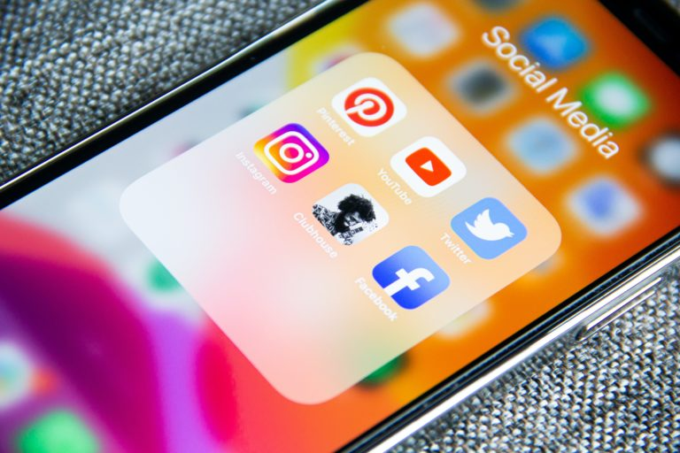

SMM - Маркетинговые услуги в социальных сетях
Маркетинг в социальных сетях (SMM) является благом для рекламной индустрии и открыл целый новый мир возможностей для общения друг с другом для маркетологов и аудитории.

Глобальное сообщество из 350 миллионов пользователей, которое продолжает расти! SMO включает обращение к вашей аудитории через такие сайты, как Facebook, Twitter, LinkedIn, Pinterest и другие, а также использование блогов, RSS-каналов, сайтов социальных новостей и различных других платформ. Было доказано, что это наиболее экономичный метод двусторонней связи с вашими текущими и потенциальными клиентами.
Социальные сети не только дают вам глобальный охват, но также помогают в повышении узнаваемости, расширении охвата бренда, генерировании трафика, потенциальных клиентов и конверсий, но, что наиболее важно, создают фактор взаимодействия с вашей аудиторией. Фактически, сайты социальных сетей более убедительны, чем что-либо еще, благодаря способности «молва»!
Мы начинаем кампанию с анализа отрасли, конкуренции и целевой аудитории и следим за тем, чтобы предлагать нужный контент в нужное время, что не только приведет к повышению осведомленности, но и привлечет внимание вашей аудитории. Мы органично развиваем кампанию, а также используем платные функции, специфичные для сети, в виде баннерной рекламы, InMails и т. Д. Мы создаем и оптимизируем контент, представляющий ценность для вашей аудитории, и повышаем уровень вовлеченности.
В целом мы обеспечиваем создание бренда, повышение осведомленности и обеспечение того, чтобы наши рекламодатели занимали видное место в верхней части страницы результатов поисковой системы по наиболее релевантным ключевым словам. Это, в свою очередь, приводит к увеличению посещаемости сайта, лидов и конверсий через сайт!
Социальные сети не только дают вам глобальный охват, но также помогают в повышении узнаваемости, расширении охвата бренда, генерировании трафика, потенциальных клиентов и конверсий, но, что наиболее важно, создают фактор взаимодействия с вашей аудиторией. Фактически, сайты социальных сетей более убедительны, чем что-либо еще, благодаря способности «молва»!
Наш подход
Наши специалисты Tokio Media создадут социальное присутствие вашего бренда, что поможет вам достичь своей целевой аудитории, продемонстрировать и продвигать свои продукты / услуги, построить прочные отношения с вашей аудиторией и повысить уровень вовлеченности. Мы предлагаем полную стратегию для вашего бренда в социальных сетях, начиная с создания большой идеи или концепции и заканчивая расширением присутствия и увеличением влияния бренда.Мы начинаем кампанию с анализа отрасли, конкуренции и целевой аудитории и следим за тем, чтобы предлагать нужный контент в нужное время, что не только приведет к повышению осведомленности, но и привлечет внимание вашей аудитории. Мы органично развиваем кампанию, а также используем платные функции, специфичные для сети, в виде баннерной рекламы, InMails и т. Д. Мы создаем и оптимизируем контент, представляющий ценность для вашей аудитории, и повышаем уровень вовлеченности.
В целом мы обеспечиваем создание бренда, повышение осведомленности и обеспечение того, чтобы наши рекламодатели занимали видное место в верхней части страницы результатов поисковой системы по наиболее релевантным ключевым словам. Это, в свою очередь, приводит к увеличению посещаемости сайта, лидов и конверсий через сайт!
Почему выбирают Tokio Media Agency?
- Команда опытных энтузиастов, экспертов и лидеров цифровой индустрии, которые твердо верят в достижение результатов
- Индивидуальные решения, адаптированные к целям и задачам клиентов
- Глубокое понимание пользовательских шаблонов, поведения и тенденций в социальных сетях
- Комплексный подход, основанный на технологиях и аналитике
- Собственные авторы контента для обеспечения использования наиболее оптимального контента
- 100% производительность или возврат денег
Часто задаваемые вопросы об управлении социальными сетями
Что такое управление социальными сетями?
Управление социальными сетями - это управление онлайн-контентом с помощью запланированных публикаций и поддержание связи с друзьями и подписчиками. Основная цель любого агентства социальных сетей - наладить взаимодействие с потребителем. Строго говоря, управление социальными сетями не подразумевает продвижение какого-либо бренда или продукта через социальные сети. Итак, никакого маркетинга нет. И это самая большая разница между маркетингом в социальных сетях и управлением в социальных сетях. Это подводит нас к следующему вопросу.Что такое маркетинг в социальных сетях (SMM)?
Маркетинг в социальных сетях (SMM) ориентирован на платный рекламный контент. Когда вы воспользуетесь услугами SMM от надежного агентства социальных сетей, они сосредоточатся на повышении рентабельности инвестиций за счет увеличения продаж и повышения узнаваемости бренда. Чтобы обеспечить максимальную видимость, маркетинговые агентства в социальных сетях часто предлагают повторять некоторые сообщения несколько раз. Это стратегически сделано для максимальной известности бренда. Эти посты часто будут иметь коммерческий характер с резкими сообщениями и призывами к действию, в отличие от обычных постов, которые являются более непринужденными, дружелюбными и информативными.С какими социальными сетями вы работаете?
Большинство компаний, занимающихся маркетингом в социальных сетях, заботятся о вашем присутствии на всех важных сайтах. К популярным относятся:- YouTube
- Google+
- Quora
Что такое SMM в цифровом маркетинге?
Маркетинг в социальных сетях (SMM) - большая часть цифрового маркетинга. Все агентства сквозного цифрового маркетинга предоставляют услуги SMM. Роль социальных сетей в цифровом маркетинге включает:- Узнаваемость бренда: именно здесь бренды ближе всего подходят к своим покупателям. Здесь рождаются проповедники бренда.
- Быстрое решение проблемы: агентства социальных сетей придумывают стратегии, чтобы быстро реагировать на обратную связь. Это особенно полезно в случае отрицательной обратной связи. Через социальные сети бренды могут решать проблемы и решать проблемы потребителей, пока не стало слишком поздно.
- Увеличение продаж: благодаря публикациям о продуктах, маркетингу влиятельных лиц и таким функциям, как магазин Instagram, компании, занимающиеся маркетингом в социальных сетях, помогают вам увеличить продажи.
- Связь с конечными пользователями: через социальные сети бренды и конечные пользователи выходят на связь напрямую. Именно благодаря пониманию потребителей и пользовательскому контенту бренды и конечные пользователи лучше понимают друг друга.
Каковы преимущества маркетинга в социальных сетях?
Чтобы максимально использовать маркетинг в социальных сетях, вам необходимо нанять одну из лучших компаний по маркетингу в социальных сетях в Индии. Если все сделано правильно, маркетинг в социальных сетях может иметь следующие преимущества:- Повышение узнаваемости бренда
- Больше входящего трафика
- Более высокие коэффициенты конверсии
- Лучшее удовлетворение потребностей клиентов
- Повышение лояльности к бренду
Каковы преимущества маркетинга в социальных сетях для малого бизнеса?
Преимущества маркетинга в социальных сетях не ограничиваются гигантскими брендами с большой покупательной способностью. Нанимая подходящее агентство социальных сетей, даже малые предприятия могут также воспользоваться социальными сетями следующими способами:- Если вы новичок в отрасли, ваш консультант по социальным сетям посоветует вам использовать мощные и четкие сообщения в социальных сетях, чтобы выделиться и создать свою нишу.
- Маркетинг в социальных сетях не обязательно должен стоить вам много денег, по крайней мере, вначале. Вы можете обсудить свой бюджет с вашим маркетинговым агентством в социальных сетях и попросить их разработать лучшие стратегии в рамках вашего бюджета.
- Будучи активным и отзывчивым в социальных сетях, вы можете эффективно обращаться к своим клиентам, не тратя много средств на обслуживание клиентов.
- Регулярно пользуясь социальными сетями, вы постепенно заметите рост узнаваемости бренда, количество потенциальных клиентов, конверсию и посещаемость сайта.
Зачем бизнесу нужен маркетинг в социальных сетях?
Если вы хотите, чтобы вас видели и слышали в социальных сетях, каждому бизнесу необходимы SMM-услуги. Вот что компании могут получить от маркетинга в социальных сетях:- Прочное присутствие бренда в Интернете
- Создайте уникальный фирменный тон
- Повышение узнаваемости бренда (мы просто не можем уделять этому достаточно внимания)
- Постоянный поток последователей / приверженцев бренда
- Общение с аудиторией один на один